A Review of Public User Reports from Online Kratom Communities
One of the most common claims made about kratom (Mitragyna speciosa) is that it does not produce a “high” comparable to traditional opioids. Advocates often describe kratom as a mild botanical supplement that provides energy, focus, relaxation, or pain relief without significant intoxication.
At the same time, public online forums contain thousands of discussions in which users openly describe kratom’s euphoric effects, compare it to prescription opioids, discuss tolerance development, seek specific strains for stronger psychoactive effects, and exchange advice on maximizing euphoria.
This article examines a sample of publicly available user discussions to answer a simple question: Do kratom users themselves report getting high from pure leaf kratom?
Across multiple online discussions, users repeatedly described kratom as producing effects they characterized as a “high,” “euphoria,” “warm glow,” “bliss,” or an experience comparable to prescription opioids.
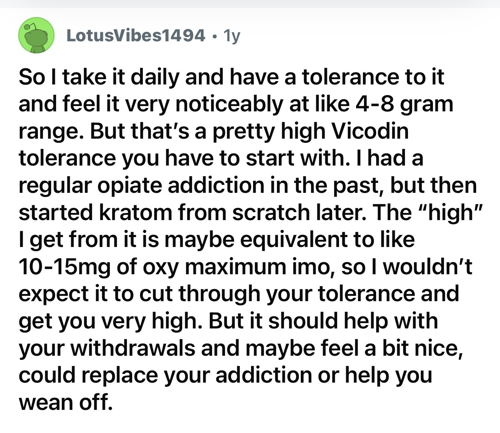
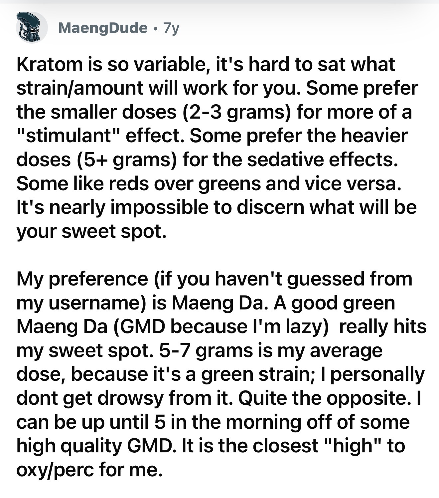
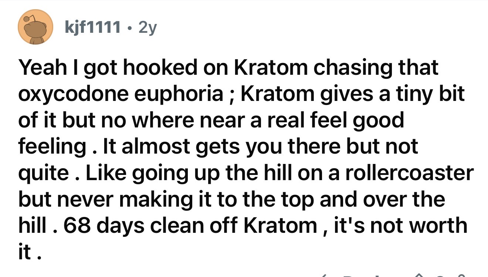
One user with a history of opioid addiction described kratom’s effects as equivalent to approximately 10–15 mg of oxycodone and stated that kratom could replace opioid use or ease withdrawal. Another user reported that high-quality Green Maeng Da was “the closest high to oxy/perc” they had experienced from kratom.
Several users explicitly compared kratom to Vicodin, Percocet, hydrocodone, codeine, and oxycodone. These comparisons were not isolated observations but appeared repeatedly across discussions spanning several years.
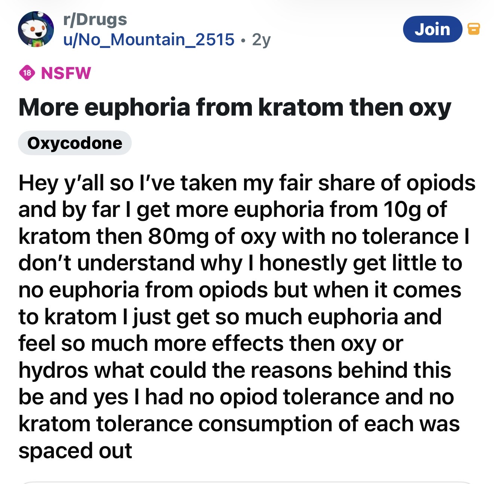
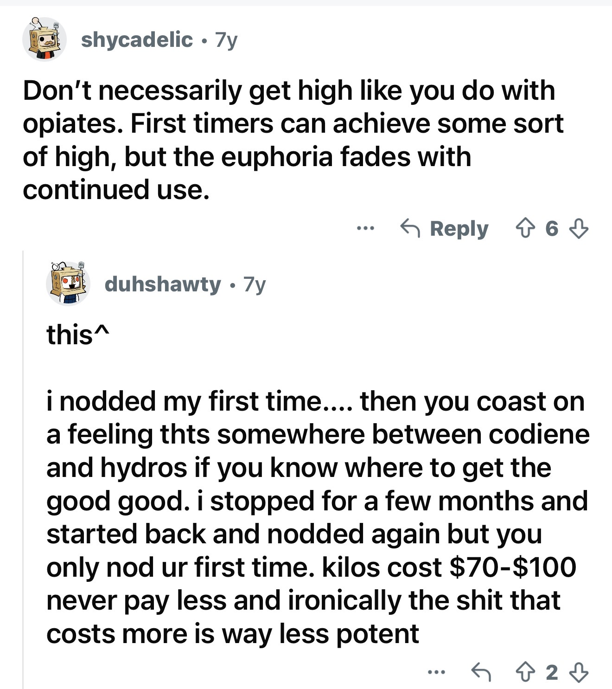
A striking theme throughout the discussions was the active pursuit of euphoric effects.
Users exchanged recommendations regarding:
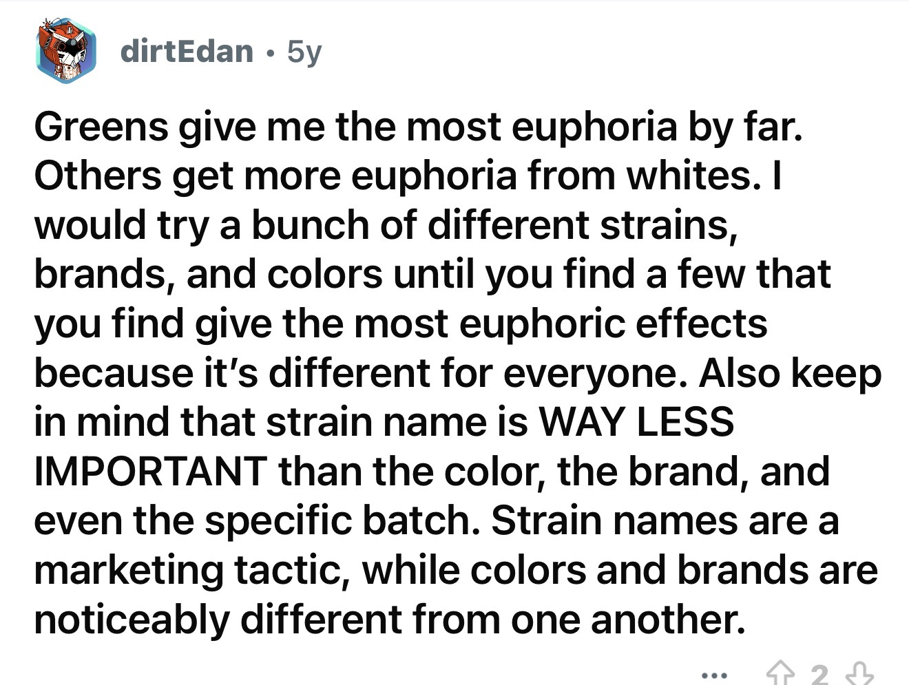
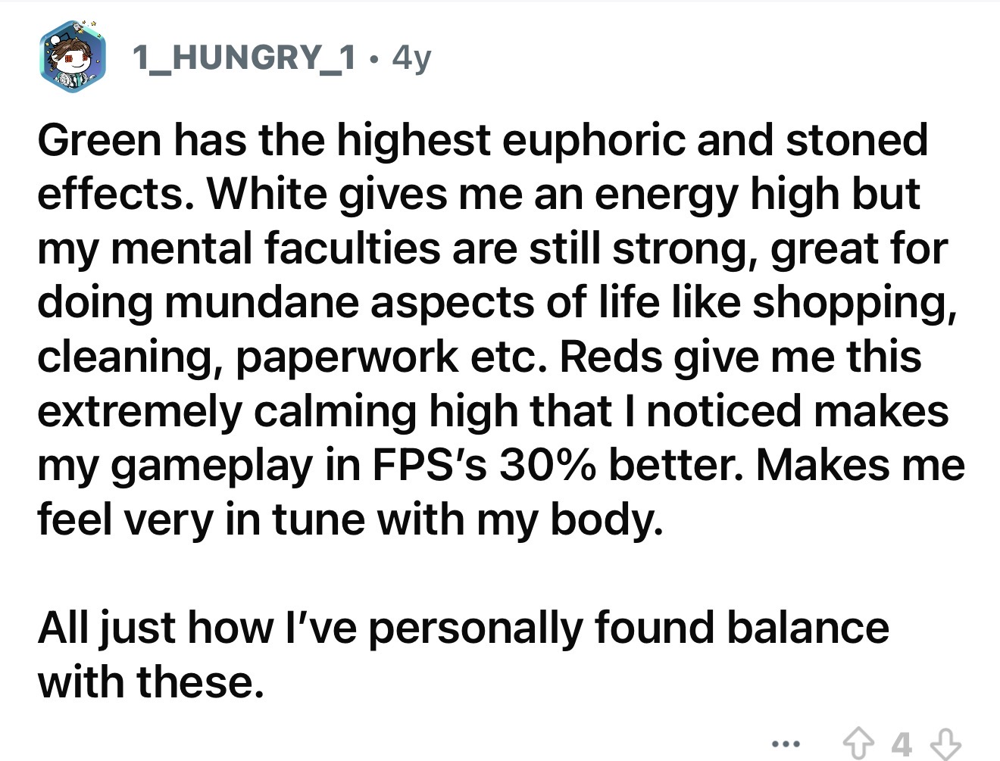
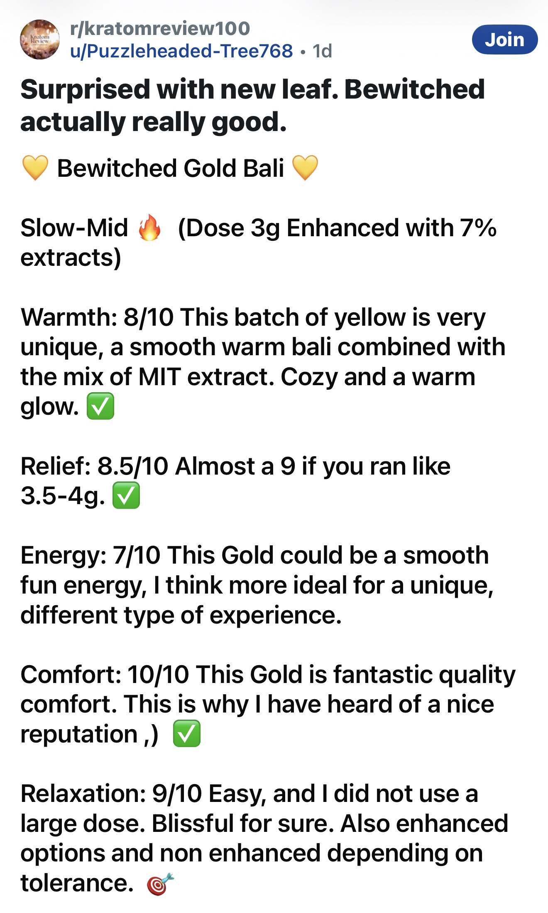
One user stated: “Greens give me the most euphoria by far.” Another wrote: “Green has the highest euphoric and stoned effects.” A product review for a kratom preparation enhanced with extract rated categories including “Warmth,” “Comfort,” “Relaxation,” and described the experience as “blissful.”
These discussions closely resemble conversations commonly observed in communities centered around psychoactive substances, where products are evaluated based on their ability to produce rewarding subjective effects.
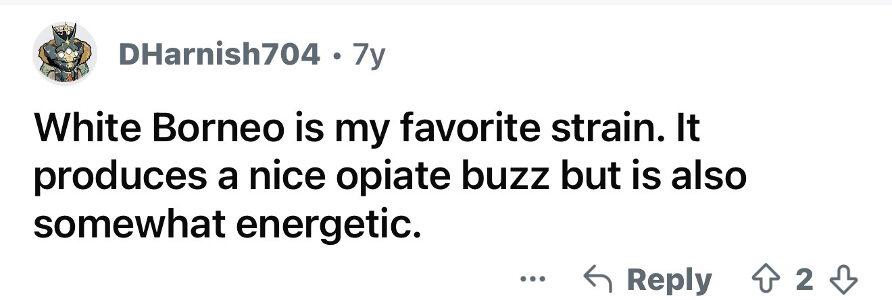
Another recurring theme was tolerance.
Multiple users reported that euphoric effects were strongest during initial use and diminished over time.
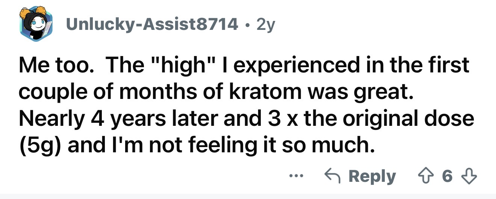
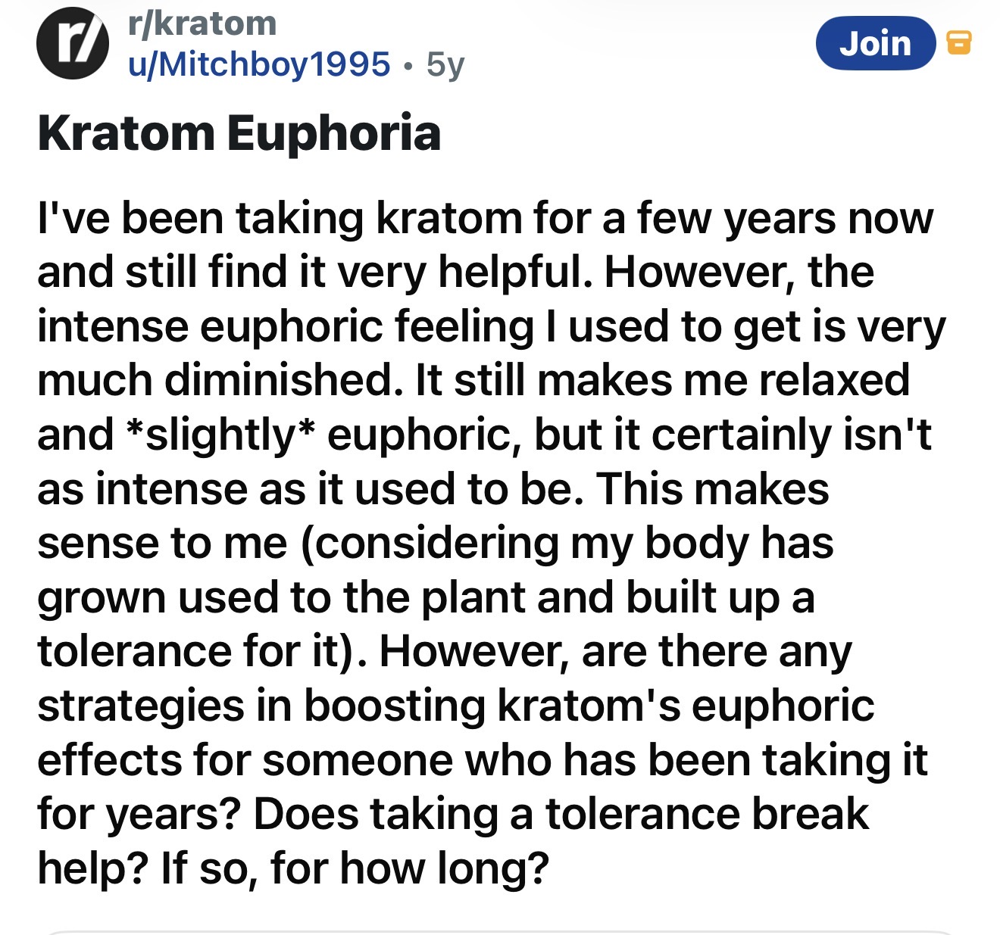
One user wrote that the intense euphoric feeling they once experienced had become “very much diminished” after years of use. Another stated: “The ‘high’ I experienced in the first couple months of kratom was great. Nearly four years later and three times the original dose, I’m not feeling it so much.”
A separate discussion focused entirely on methods for restoring or boosting kratom’s euphoric effects after long-term use. The development of tolerance is a hallmark feature of many psychoactive substances that act on reward pathways.
Several users described effects extending beyond mild mood enhancement.
One commenter reported: “I nodded my first time.” The same individual compared the experience to a feeling somewhere between codeine and hydrocodone. Others described sedative effects at higher doses, while some users specifically distinguished stimulating doses from sedating doses depending on amount consumed.
These reports suggest that users perceive meaningful dose-dependent psychoactive effects rather than merely subtle wellness benefits.
Multiple posts described previous opioid addiction and subsequent kratom use.
Users frequently discussed kratom as:
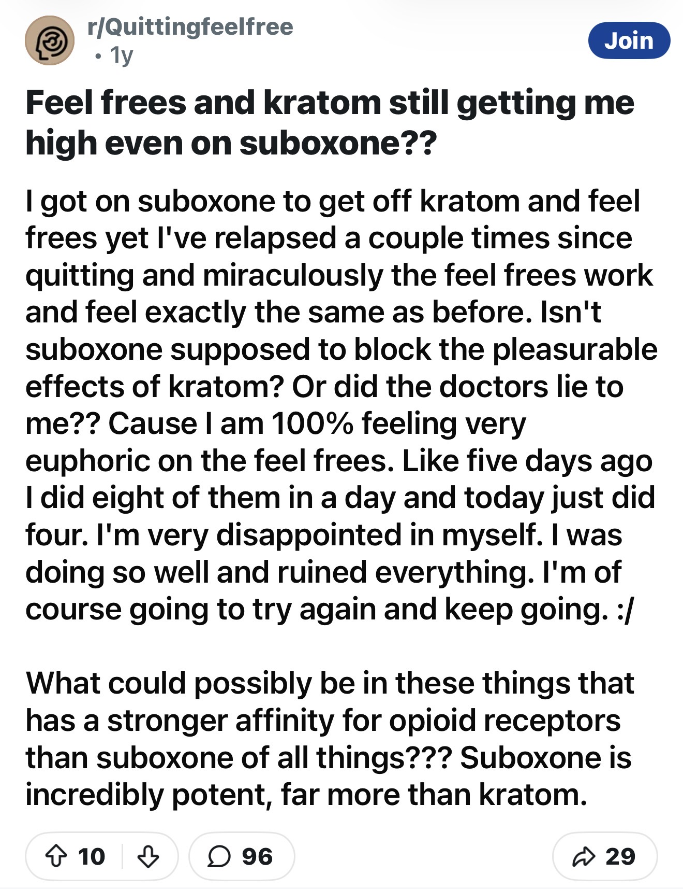
These reports do not establish that kratom is identical to prescription opioids. However, they demonstrate that many users perceive overlap between the subjective effects of kratom and traditional opioid drugs.
These observations have important limitations.
Online posts cannot verify identity, product composition, dose, medical history, or truthfulness. The users represented here may not reflect all kratom consumers. Individuals who experience strong psychoactive effects may also be more likely to post about them publicly.
However, these limitations do not change the central observation.
When kratom users are asked whether pure leaf kratom can produce a high, many answer yes.
The discussions reviewed here contain repeated references to:
These themes appear consistently across different users, different years, and different discussions.
The question is not whether every kratom user gets high.
The question is whether pure leaf kratom is capable of producing a psychoactive euphoric effect that users themselves recognize as a high.
Based on publicly available user discussions, the answer appears to be yes.
While experiences vary substantially between individuals, many kratom users openly describe euphoria, opioid-like effects, tolerance development, and the pursuit of stronger psychoactive experiences. These reports challenge the common claim that pure leaf kratom functions solely as a benign wellness supplement and suggest that its psychoactive properties play a meaningful role in why many individuals continue to use it.